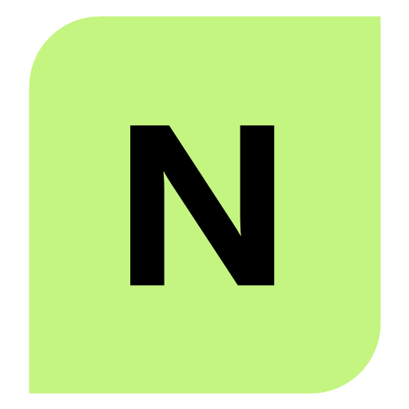

XBOX 360 / LOCAL COMPANION
Your console.
A clear view.
Live status, storage, library, and Neighborhood-class controls through the local bridge. Game editors stay in Pro.
Console connection
Open this page through the local bridge.
Phone pairing
Use trusted private Wi-Fi. HTTP is unencrypted. Never forward the bridge port.
Console storage
Folders first. File transfers are limited to 128 MiB each and never replace an existing file. Inspect an XEX before launch.
Upload a file or folder
No transfer running.
Folder transfer idle. Existing files are not replaced.
Inspection and baseline proposal
Choose Inspect beside an XEX file.
Candidates remain untrusted. The reviewed catalog is never changed automatically.
Inspect a local Xbox 360 ISO
Choose an image on this PC. Nebulah reads only disc and XEX headers in your browser; no image bytes are uploaded, saved or sent to the console.
No image inspected.
Storage health
Run a check after connecting.
Your library
Related content
Select a saved XEX to find nearby trainers and title-update candidates. Discovery does not prove compatibility or active state.
Preview content placement
Choose a local file to preview its destination under the selected game. This does not upload or activate content.
Favorites & previous launches
Favorites and launch history are saved on this PC. Launch uses a fresh inspection ticket from Storage.
Discover Xbox 360 games
Browse IGDB metadata and compare titles with your saved console library.
Checking IGDB setup…
Names and covers may be suggestions. The console file identifies the title. No game files are downloaded or installed.
Console
Power
Power commands need confirmation and reconnect.
Controller
One short digital pulse. Guide, analog, and hold are not available.
Connect a console before sending a pulse.
Notification
Screen
Modules
Connect a console to read module control.
Measure a plugin XEX before load. The file must match a reviewed build.
Direct unload, force-release, and plugin install stay paused until a console trial. A Companion-managed module can be unloaded from this list.
DashLaunch launch.ini
Connect a console to verify the active launch.ini.
Private console information
Only reveal your CPU key on a trusted device. It clears after 60 seconds and is never saved.
Discord activity
Discord Rich Presence

Nebulah LinkShare the running title through Discord on this PC. When a public game icon exists, Discord receives its Title ID in an x360db artwork URL. No console path, gamertag or private console identifier is sent. Activity clears when stopped or the bridge closes.
Stopped.
Upload this N artwork as nebulah_n in your Discord application's Rich Presence assets. Only the bridge PC can control this feature.

Console profiles
Detected profile packages on this console. Choose a picture to read fresh package details. Inspection does not change a console file.
Open this tab to find profiles.
Choose a profile to inspect its package.
Choose a package manually
USB disks on this PC
Read-only Windows inventory of physically connected USB disks and mounted volumes.
Open this page to check USB disks.
Console USB roots are listed under Storage.
WINDOWS USB BUILDER
PC ONLYBuild a softmod USB
BadBuilder v2.1.0 runs through this page on the bridge PC. The included engine downloads, extracts, formats, and copies the selected packages.
Checking the local builder engine.
BadBuilder by Pdawg, adapted under its BSD 3-Clause license. No USB disk is changed until you submit the exact erase confirmation and approve Windows elevation.
Local settings
Launcher settings
Windows launcher
These preferences apply the next time you start Nebulah Link. Only this PC can change them.
Open this panel to load saved settings.
Cherry local virtual profile
PC-local Cherry-style profile data. It does not change the Xbox profile or Xbox Live status. Only the bridge PC can enable or edit it.
Open this panel to check local API status.
PC FTP proxy
Optional FTP listener on this PC. It maps discovered console drives. It does not start FTP on the console. Uploads keep the 128 MiB cap, refuse overwrite, and use a staged file.
Connect a console on this PC to manage FTP.
Locked console actions: upload, inspected launch, power, controller pulse, FTP, notification, plugins, and launch.ini. Game editors and RTE stay off. Pro download codes are not entered on this page.